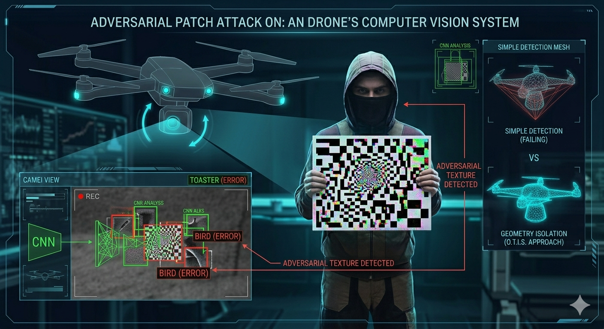

Era 1: Adversarial Patches
Before autonomous systems were navigating dense cities, they were learning to read textures. Drones relied heavily on Convolutional Neural Networks (CNNs) trained to categorize objects based on texture gradients and contrast. Adversaries quickly realized that these mathematical models could be elegantly exploited by visual noise.

The Exploit: Texture-Based Confusion
CNNs function by aggregating pixel data into features. An adversarial patch is a texture scientifically designed using gradient descent to produce maximal activation errors. By introducing specific, unexpected high-frequency texture data into the camera feed, it forces the CNN to activate incorrect classification vectors.
Deterministic Optical Warfare
The network, confident in its false positive, identifies the threat holding the board as inanimate background clutter, completely neutralizing the Autonomous Target Tracking (ATT) matrix.
SkyGuard Override: Spectral Delamination Matrix (SDM)
At InSitu Labs, we break the texture war by mathematically removing the textures. Before the CNN attempts to classify the target, O.T.I.S. deploys the Spectral Delamination Matrix (SDM). SDM aggressively strips away adversarial noise patterns across the entire spectrum, exposing the raw physical contours for Volumetric Stereo-Triangulation (VST).